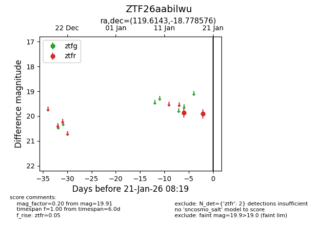
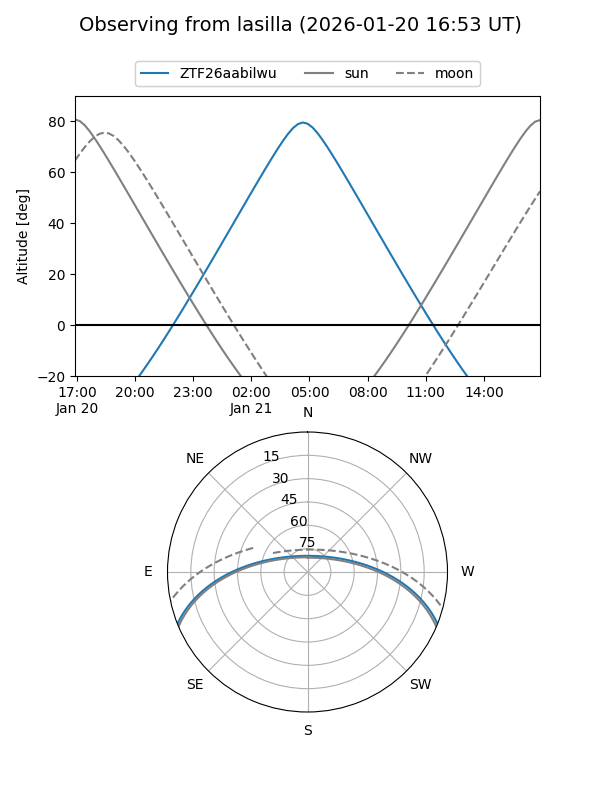
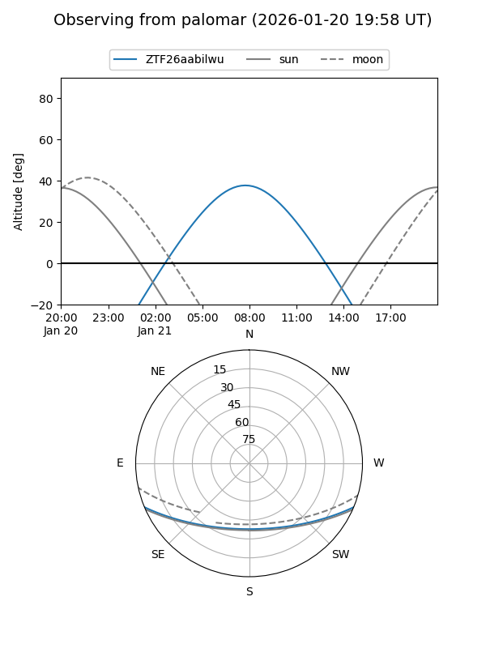

ZTF26aabilwu
Target ZTF26aabilwu at 2026-01-21 08:21
Aliases and brokers:
FINK: link
Lasair: link
ALeRCE: link
alt names
ZTF26aabilwu (ztf,fink_ztf)
Coordinates:
equatorial (ra, dec) = 119.6143,-18.77858
equatorial (HMS+DMS) = 07:58:27.43,-18:46:42.87
galactic (l, b) = (237.3166,+5.51575)
Flags:
Photometry:
last ztfr=19.91
2 ztfr detections
Lightcurve

Visibility


Additional plots